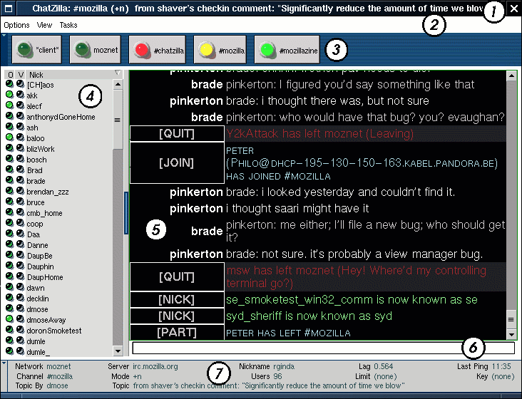

ChatZilla ユーザーズガイド
はじめる前に
このページは ChatZilla IRC クライアントの詳しい使い方について書いて あります。 どうぞ ChatZilla は完成していないということを覚えておいて下さ い。もしあなたが、より一般的な IRC クライアントで使用されるコマンド のサブセットを喜んで受け入れるなら、このソフトは使用できます。実際は、 ChatZilla 自身、まだ完成していないソフトウェア ( もちろん Mozilla の ことです ) のほんの一部分としてビルドされています。多くの ChatZilla ユーザはクラッシュ、妙な振る舞い、無分別な動作や動きの息切れを経験し、 そしてバグを直したい衝動に駆られます。もし貢献したいと思ったら、 netscape.public.mozilla.rt-messaging のニュースグループでその旨伝え るか、 rginda@netscape.com までメールを送って下さい。もし、あなたがあまり IRC に慣れていないなら、 www.irchelp.org に公開されている FAQ をよく見て下さい。
外観
ChatZilla 出力ウィンドウ ( 図 1 の 5) は、一度 に 1 つの ビュー だけを表示します。このビューは、あなたが話 しているチャンネルから、あなたがプライベートメッセージを送っている 相手から、あなたが接続しているネットワークから、または直接 ChatZilla から来るメッセージを表示します。これらビューのタイプは Channel, User, Network, Client として 参照されます。
現在のビューとは入力ボックス ( 図 1 の 6) を通して対話しま す。基本的に、 1 行の文か 1 つのコマンドを入力ボックスの中でタイプ し、 ENTER キーを押します。コマンドは 1 行の文とは異なり ます。なぜなら、全てのコマンドはコマンド文字から始まるから です。デフォルトでコマンド文字は "/" です。コマンドは ChatZilla に ある特定の動きをさせます。コマンドでない 1 行の文をタイプし たときに起こることは、どのタイプのビューがアクティブかによります。
- client ビューのコマンドでない文に対する反応は、それを JavaScript コードとして実行し、出力ウィンドウに結果を表示すること です。 (もしあなたが、あなた自身何をしているか分かっているか、あなたがそ うしようと思えば、これは楽しめるでしょう。もしそうでなくて も心配することはないです。後でこの機能の使い方についての情報をより 多くの情報を掲載するつもりです[誰かがそれを先にしなければ]。
- Network ビューは、デフォルトではコマンドでない文を解釈 しません。 network ビューがアクティブな時に、コマンドでない文はど んなものをタイプしても、エラーとなります。
- Channel ビューは、コマンドでないテキストならどんなもの でもチャンネルに送信します。他のチャンネルメンバーはあなたのニック ネームと一緒に、あなたが何をタイプしたかを見るでしょう。
- User ビューは、コマンドでないテキストならどんなものでも あなたが話しかけているユーザーだけに送信します。対象のユー ザーは、あなたのニックネームと一緒に(他にいないですが)、あなたが何 をタイプしたかを見るでしょう。
UI の要素
小さくした ChatZilla のスクリーンショッ ト も公開しています
{kind=link}
- タイトルバー
タイトルバーは現在のビューに関する情報を表示します。- もしあなたがチャンネルの動作状況を見ているなら、タイトル バーはチャンネル名、チャンネルモード、会話のトピックを表 示します。もしツールバービュー ( 図 1 の 3) が隠されたら、動作状況リストを表示する場所を 確保するために、トピック情報は省略されます。
- もしあなたが一対一のチャットを見ているなら、タイトルバー はあなたが話しているユーザーのニックネームを表示します。
- もしあなたがネットワークからのメッセージを見ているなら、 タイトルバーはあなたが接続しているサーバ(あなたが接続し ているなら)、あなたのニックネーム(あなたがログインに成功 しているなら)、サーバがあるネットワークの名前を表示しま す。
- 最後に、もしあなたが *client* ビューを見ているなら、タイ トルバーは ``ChatZilla!'' と表示するでしょう。
もし、ビューのツールバーが隠されると、動作しているビューのリス トは、既にタイトルバーに現われている情報で全てとなります。例え ば、図 1 でビューのツールバーが隠された場 合、タイトルバーは ``ChatZilla: #mozilla (+n) -- Activity [3!,5]'' をかわりに表示するでしょう。 3 の後ろに有るエクスクラ メーションは、何かの動作があなたに向けられたことを意味します (ビューのボタンに有るライトが赤く光っている状態と同じです)。そ こで、 ただ F3 を押すことによって、 #chatzilla ビュー へ切替えることができます。
- メニューバー
メニューバーは以下のメニューを持ちます。- Options
- トグル
オンとオフを切替えることができるオプション- Debug messages
ChatZilla が使用する IRC ライブラリは、自身のイベ ントモデルを定義しています。 Debug messages をオン にすることで、このモデルによって処理されたイベント の情報を表示します。 Windows では、 -console オプ ションを付けて mozilla を起動しないとならないでしょ う。 - Munger
munger は平文のテキストを HTML のようなテキストに munging する役割を持つ ChatZilla のコンポー ネントです。例えば、デフォルトで munger は *this text* を *this text* に、 /this text/ を /this text/ に、 _this text_ を _this text_ に変換します。これは、似たような変換を手 書きするのと同様です。 munger はまた、テキストをリ ンクに変換する役割や、誰かがあなたに話しかけて来た ことを認識する役割も持っています。 munger は、他に 影響を与えないよう、いくつもの munging 規則をオフ にしています。そのためこの機能はまだ UI では使えま せん。今、あなたが得るものは全てか何もないかのどち らかです。
ハック 1
- Debug messages
- Logging ...
このオプションはまだ実装されていません。
- トグル
- View
外見を調節します。- Toolbar
ツールバービューの表示/非表示を切替えます。 /toolbar コマンドと同等です。 - Info Tree
情報ツリーを表示/非表示を切替えます。 /names コマンドと同等です。 - Statisbar
ステータスバーの表示/非表示を切替えます。 /statusbar コマンドと同等です。 - Icons in View Buttons
ツールバービューの LED アイコンの表示/非表示を切替えます。 もし、アイコン表示がオフならば、動作状況はボタン内のテキ ストの色で伝えられます。 - CurrentView
- Hide
現在のビューのアイコンをツールバーから消します。た だし、その内容は保存されます。アイコンは、次にその ビューで動作が有ったときに再び現われます。 /hide コマンドと同等です。 - Clear
現在のビューをクリアします。 * 全ての * 内容を破棄 します。 /clear コマンドと同等です。 - Delete
現在のビューをクリアし、 * 全ての * 内容を破棄し、 ツールバーからアイコンを消します。 /delete コマンドと同等です。
- Hide
- Toolbar
- Options
- ツールバービュー
ツールバービューは、開いているビューを表現するボタンの集合を含ん でいます。これは、 View->Toolbar のメニューオプションか、 /toolbar コマンドで隠すことができます。ツールバーボタン 内の LED は、対応するビューの動作状況によって外観を変えます。- 明るい黄色の LED は出力ウィンドウに現在表示されてい るビューであることを表します。 もし、 "Icons in View Buttons" オプションがオフになると、 シアンの文字で動作状況をあなたに伝えます。
- 明るい緑の LED はビューが動作していることを表します。 さらに、何か動作が起こるたびに、 LED は光ります。 もし、 "Icons in View Buttons" オプションがオフになると、 緑の文字で動作状況表します。
- 赤く光る LED はそのビューがあなたに向けた動作をして いることを表します。 もし、 "Icons in View Buttons" オプションがオフになってい ると、赤の文字で動作状況を表します。
- 暗い緑の LED はそのビューが動作していないことを表し ます。もし、 "Icons in View Buttons" オプションがオフにな ると、黒の文字で動作していないことを表します。
- 情報ツリー
これは、いつか沢山の異なった種類の情報を表示することが期待されて いるため、情報ツリーと呼ばれていますが、今のところ、ユーザー情報 を表示するだけです。 ユーザー情報を表示しているとき、 3 つの列になります。最初の列は ユーザーがオペレータ権限を持っているかどうかを表します。 光っているなら、ユーザーはオペレータです。 2 列目は、ユーザーが ボイス権限を持っているかどうかを表します。同様に光ってい るならば、ユーザーは"ボイス権限を持って"いて、そうでなければ持っ ていません。 3 列目はユーザーのニックネームを表示します。ユーザー 情報は、 3 列のうちどの列でも列のヘッダーをクリックすることで、 昇順/降順に整列することができます。 - 出力ウィンドウ
出力ウィンドウは現在のビューからのメッセージを表示します。メッセー ジは 2 つの列に表示されます。最初の列はそれに続くメッセージのタ イプを、 2 列目はメッセージの文を表します。チャンネルとユーザー ビューでは、他のユーザーからのメッセージが来たときに、メッセージ のタイプの代わりに送信したユーザーのニックネームを表示します。 - 入力ボックス
入力ボックスは、 ChatZillaのコマンドとユーザーやチャンネルに送る 文を入力する場所です。デフォルトでコマンド文字は "/" です(ハック 2) 。タイプし始めたコマンドを完了する ためにタブ補間を使うことができます。例えば、 /d とタイプして TAB を押すと、 ChatZilla は e を あなたのコマンドに付け加え、 /de とします。これは "d" という文字から始まるコマンドが複数有るけれど、それらは全て 2 文 字目が "e" であることを教えてくれます。 /de に対して可 能な補間のリストを見るためには、 TAB を 2 度(素早く)押 してください。 ChatZilla は ``Commands matching ``de'' are [delete, deop, desc, devoice]'' と表示するでしょう。あなた が自分の説明を変更したいとすると、あなたは以下のように続ければよ いでしょう:- ``sc'' とタイプし ENTER を押す
- ``s'' とタイプし TAB を押す
- ``s'' とタイプし ENTER を押す
ChatZilla のコマンドを実行するためには、完全に入力する必要はな く、一意であればよいことに注目してください。 /des か ら始まるコマンドは他に無いので、自動的に description と 解釈されます。
チャンネルビューがアクティブのとき、タブ補間は同様にニックネー ムに対して動作します。もし、あなたがタイプしている単語が、入力 ボックスの最初の単語で、それがコマンド文字 (``/'' がデフォルト) でないならば、 TAB はそのチャンネルのニックネームのリ ストに対応します。もし対応するものがみつかったら、そのニックネー ムとそれに続く "," (ハック 3) が入力ウィ ンドウに現われるでしょう。もしあなたがタイプした単語が最初の単 語でないならば、 1 つのスペースが後ろに付くでしょう。 (ChatZilla は、ニックネームが入力ボックスの最初の単語の場合に、 あなたが直接その人に話しかけているものとして、その助けになるよ う ", " を挿入します。
- ステータスバー
チャンネルビューでは、ステータスバーはあなたがいるチャンネルの詳 細を表示します。- Network はあなたが接続しているネットワークです。
- Server はあなたが接続している(ネットワークの)サーバー です。
- Nickname はあなたのニックネームです。
- Lag は最後に ChatZilla が送信した ping に対してサー バーが応答するのにかかった秒数です(ハッ ク 4) 。
- Last Ping IRC サーバーからの最後の ping 要求を受け 取った時刻 (24 時間形式)です。
- Channel はあなたがしゃべっているチャンネルです。
- Mode は現在のチャンネルのモードです。
- Users はチャンネル内のユーザーの数です。
- Limit はチャンネルの最大許容ユーザー数です。
- Key はチャンネルに参加するために必要となるキーです。
- Topic by はトピックをセットしたユーザーのニックネー ムです。
- Topic はチャンネルで話している現在のトピックです。
ステータスバーは、 Views->Status Bar のメニューオプショ ンか、 /statusbar コマンドで隠すことができます。
ハック
多くの ChatZilla ユーザーはこんなことは聞きたくないでしょうが、も しあなたが、これから起こるだろうことに興味を持ち、 ChatZilla に機 能を付け加えたいと思うか、単にする必要も無いことをするのが好きなら、 これらの糸口は助けになるかもしれません。
- コマンド文字は client.COMMAND_CHAR 変数に保存されていま す(いつか設定になるでしょう)。それを(例えば) ``bang'' に変えるに は、入力ボックスで /eval client.COMMAND_CHAR = "!" とタ イプしてください。 1 文字よりも長くすることは予期せぬ結果を招く ことがあります。
- タブ補間された先頭単語のニックネームに添えられる文字は client.ADDRESSED_NICK_SEP 変数に保存されています。それ を(例えば) ``: '' に変えるには、入力ボックスで /eval client.ADDRESSED_NICK_SEP = ": " とタイプしてくだ さい。これはあなたが望む量の文字を使えます。(これも設定にする必 要があります)
- ほとんどの IRC サーバーは、ただあなたのクライアントが応答するか どうかを確認するために、数分おきに ping 要求を送信します。 ChatZilla が使っている IRC ライブラリがそれらを聞いたとき、期待 通りに ping に応答し、さらに自身の ping 要求も送出します。この ping 要求がサーバーに行ってから応答が返って来る間の時間は Lag と して報告されます。
Robert Ginda